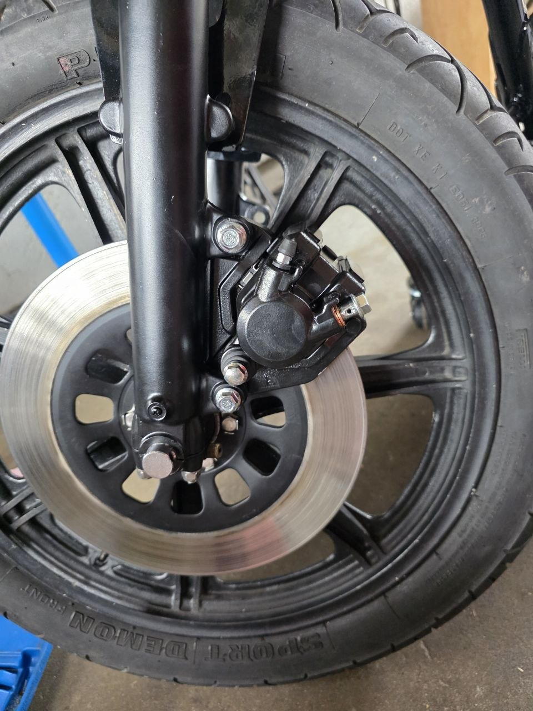
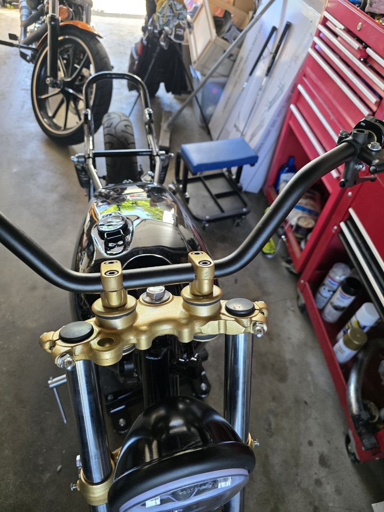
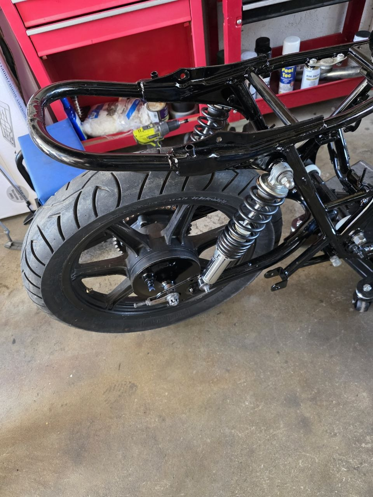
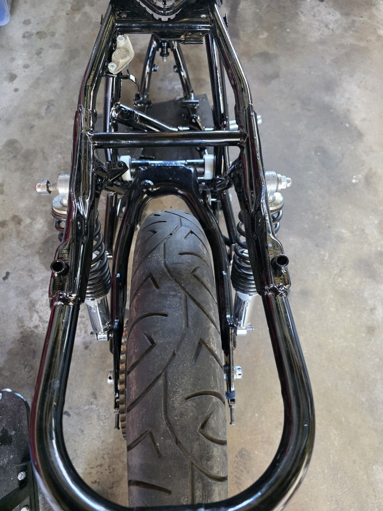
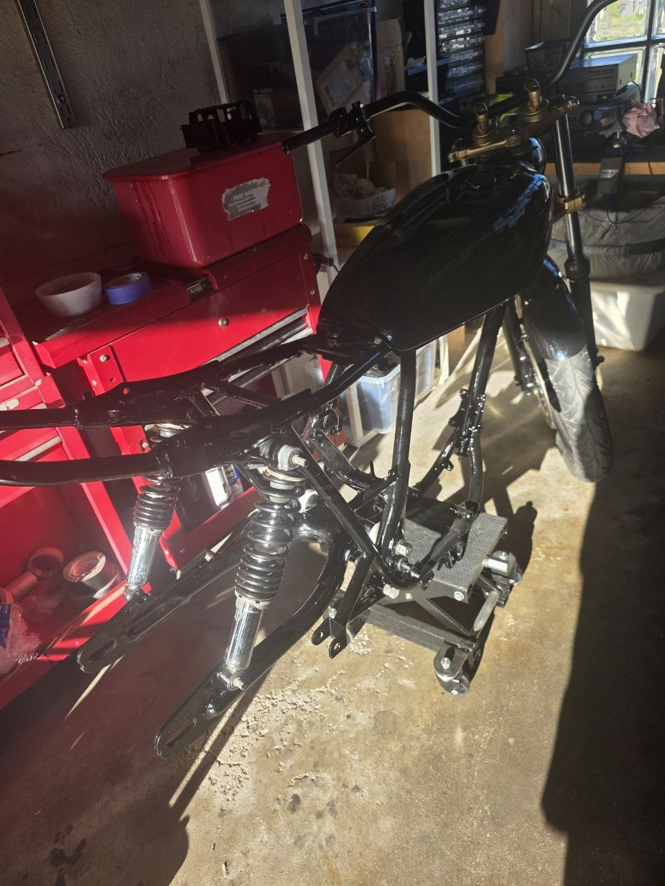

🔧 Bakenden komplett, ny bremsekaliper på plass!
Denne uka har vært ei skikkelig god økt i garasjen. Flere ting har kommet på plass, og sykkelen begynner virkelig å ligne noe nå.

🛑 Ny bremsekaliper foran
Replica front brake caliper left fra KEDO ankom i posten — og satt rett på med noen små justeringer. Den gamle kaliperen var helt kjørt, så dette var en etterlengtet erstatning. Rask levering fra KEDO (bestilt 20. juli, levert 24.).
Kombinert med flensboltene og klemboltene fra CMSNL som kom for et par uker siden, så er nå forbremsesystemet komplett og klart.

🔧 Bakenden komplett
Det har skjedd mye bakover på sykkelen også:
- Svingarm: Nye nålelager (HMK 2220 LSHRE) montert, svingarmen på plass ✅
- Støtdempere: Pussa opp og montert ✅
- Bakhjul: Montert med nye lagre og simringer ✅
- Bremsestag: Moniert ✅

Svingarmsettet med nålelager fra Kulelagerhuset Drammen passet perfekt. Støtdemperne fikk en skikkelig oppussing og ser ut som nye. Bakhjulet var allerede klart med Online MC sitt lager- og simring-sett.

📈 Status
Det betyr at bakenden nå er komplett montert på den nyoppussede ramma, og forhjulet har fått sin nye kaliper. Neste steg blir å få på plass resten av elektronikken — MotoGadget mo.unit blue og VAPE-tenninga venter fortsatt på montering.

Gleder meg til å fortsette! 🔧🏍️